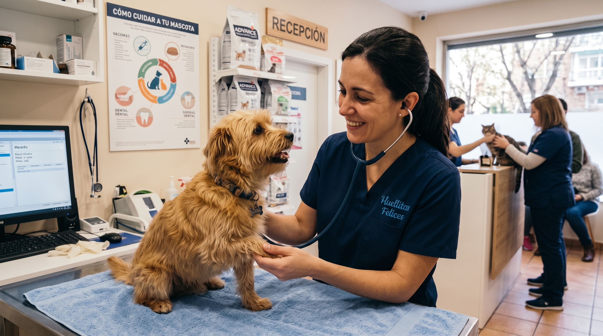

Misión
Brindar atencion veterinaria de calidad, combinando conocimiento profesional, tecnología y un trato cercano para cuidar la salud y el bienestar de cada mascota.


Veterinaria Huellitas Felices nació como un proyecto vocacional con un objetivo transparente: brindar una medicina animal rigurosa, cercana y libre de miedos, donde cada tutor se sienta acompañado y escuchado con tranquilidad.
Nos alejamos de la frialdad de las clínicas tradicionales creando un espacio amigable, con consultorios cómodos, tiempos de consulta extendidos para acariciar a la mascota antes del examen y espacios preparados para su recuperación.
Creemos firmemente en la medicina preventiva como el camino más noble para garantizar una vida larga, saludable y activa a mascotas de todas las edades.
Protocolos de bajo estrés (Fear Free)
Monitoreo anestésico multiparamétrico
Historia clínica digital y seguimiento
Asesoramiento nutricional y afectivo
Trabajamos cada día para brindar una atención profesional, cercana y responsable.
Brindar atencion veterinaria de calidad, combinando conocimiento profesional, tecnología y un trato cercano para cuidar la salud y el bienestar de cada mascota.
Ser una veterinaria de referencia por nuestra calidad profesional, compromiso con las familias y dedicacion al cuidado integral de las mascotas.